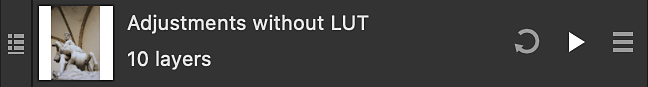
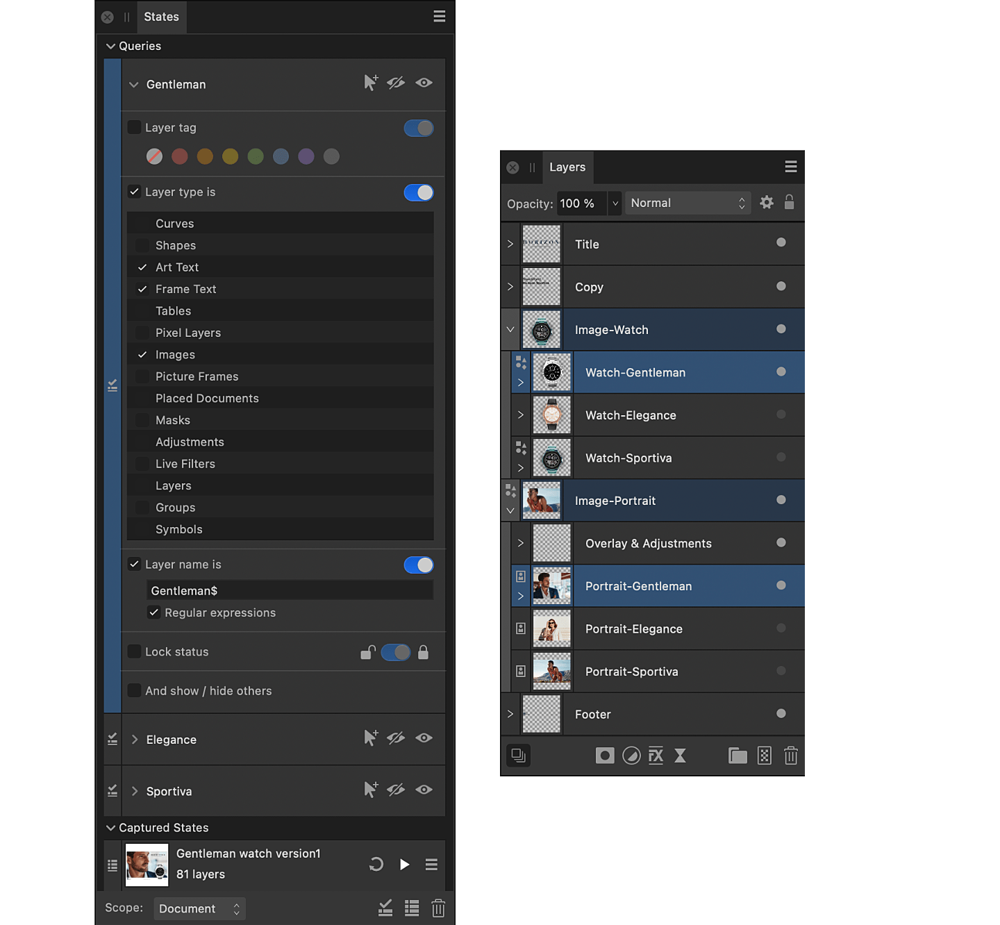

Layer states
Layer states, or simply states, allow you to instantly set the visibility and layer effects of multiple layers.


Layer states, or simply states, allow you to instantly set the visibility and layer effects of multiple layers.
There are two types of state:
States of each type can be given a name.
With several states or queries added to the States panel, you can quickly compare different design choices for your document, such as alternative masks, adjustments, live filters and even entirely different layer content.
Entries on the States panel for each type of state provide different information about how they will affect your document's layers.

Each state entry displays:

Each query entry displays the query's name, and specifies the criteria that must all be met in order to set your chosen layer visibility. You can specify any combination of the available attributes. Unselected attributes are ignored.
The application of states and queries can be used in a number of professional scenarios. Apart from a preview of what your composition would display, as per the example above, more could include:
When adding or updating a state or applying a state or a query, use the Scope setting to determine how broadly information is captured from or affects the current visibility of your document's layers, respectively.
The scope can be the whole document, the current selection on the Layers panel, or an individual spread—useful when editing certain kinds of document, such as .afpub
This allows you to focus your use of states on a specific portion of your work. For example, layers whose tag color is orange but only if they are nested within a selected layer.
On the States panel: